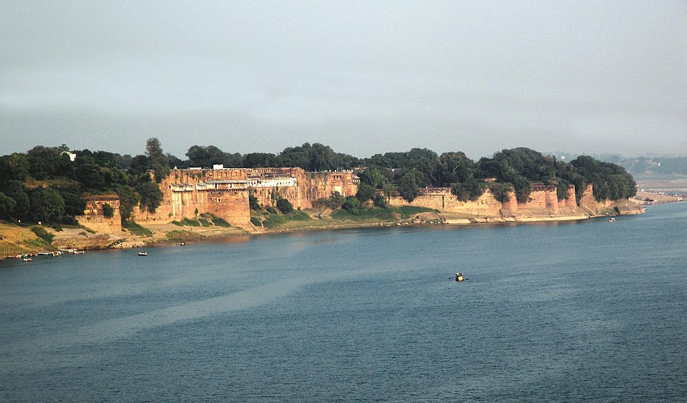

|  | Allahabad |
This article is about the Indian city. For other uses, see Allahabad (disambiguation).
Allahabad Pronunciation officially known as Prayagraj, and also known as Illahabad and Prayag,[9] is a city in the Indian state of Uttar Pradesh. It is the administrative headquarters of Allahabad district—the most populous district in the state and 13th most populous district in India—and the Allahabad division. The city is the judicial capital of Uttar Pradesh with Allahabad High Court being the highest judicial body in the state. As of 2011, Allahabad is the fifth most populous city in the state, eighth in Northern India and twenty-fourth in India, with an estimated population of 1.11 million in the city and 1.21 million in its metropolitan region.[10][11] In 2011 it was ranked the world's 40th fastest-growing city.[12][13] Allahabad, in 2016, was also ranked the third most liveable city in the state (after Noida and Lucknow) and sixteenth in the country.[14] Hindi is the most widely spoken language in the city.
Allahabad houses various central government offices and organisations, such as-
Ministry of Home Affairs
Allahabad has a humid subtropical climate common to cities in the plains of North India, designated Cwa in the Köppen climate classification.[105] The annual mean temperature is 26.1 °C (79.0 °F); monthly mean temperatures are 18–29 °C (64–84 °F).[106] Allahabad has three seasons: a hot, dry summer, a cool, dry winter and a hot, humid monsoon. Summer lasts from March to September with daily highs reaching up to 48 °C in the dry summer (from March to May) and up to 40 °C in the hot and extremely humid monsoon season (from June to September).[106] The monsoon begins in June, and lasts till August; high humidity levels prevail well into September. Winter runs from December to February,[107] with temperatures rarely dropping to the freezing point. The daily average maximum temperature is about 22 °C (72 °F) and the minimum about 9 °C (48 °F).[108] Allahabad never receives snow,[109] but, experiences dense winter fog due to numerous wood fires, coal fires, and open burning of rubbish—resulting in substantial traffic and travel delays.[107] Its highest recorded temperature is 48 °C (118.4 °F), and its lowest is −2 °C (28 °F).[106][110]
Rain from the Bay of Bengal or the Arabian Sea branches of the southwest monsoon[111] falls on Allahabad from June to September, supplying the city with most of its annual rainfall of 1,027 mm (40 in).[109] The highest monthly rainfall total, 333 mm (13 in), occurs in August.[112] The city receives 2,961 hours of sunshine per year, with maximum sunlight in May.[110]
| Climate data for Allahabad (Allahabad Airport) 1981–2010, extremes 1901–2012 | |||||||||||||
|---|---|---|---|---|---|---|---|---|---|---|---|---|---|
| Month | Jan | Feb | Mar | Apr | May | Jun | Jul | Aug | Sep | Oct | Nov | Dec | Year |
| Record high °C (°F) | 32.8 | 36.3 | 42.5 | 45.8 | 48.4 | 48.8 | 45.6 | 42.7 | 39.6 | 40.6 | 36.0 | 31.9 | 48.8 |
| Average high °C (°F) | 28.8 | 27.1 | 33.7 | 39.5 | 41.2 | 39.2 | 34.3 | 33.2 | 33.1 | 33.0 | 29.7 | 25.0 | 32.6 |
| Average low °C (°F) | 9.2 | 12.3 | 17.1 | 22.6 | 26.5 | 27.9 | 26.7 | 26.3 | 25.2 | 20.9 | 14.8 | 10.5 | 20.0 |
| Average rainfall mm (inches) | 14.4 | 11.4 | 5.1 | 4.4 | 13.4 | 83.4 | 210.1 | 210.4 | 157.9 | 25.9 | 3.0 | 4.6 | 744.1 |
| Source 1: India Meteorological Department[113][114] | |||||||||||||